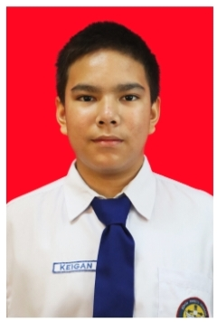
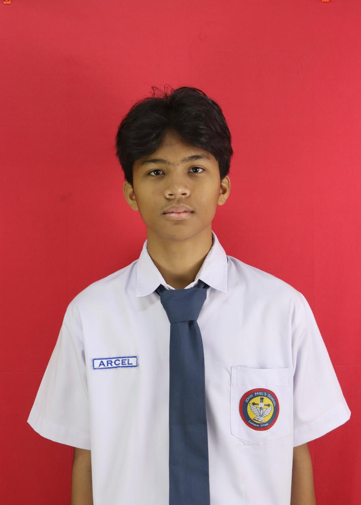
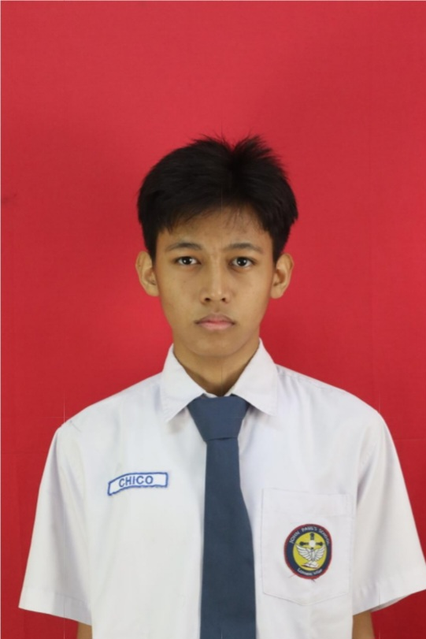

Mengapa AksesKota dibuat?
Lebih dari 30 juta penyandang disabilitas di Indonesia menghadapi informasi aksesibilitas yang tersebar, usang, atau tidak tersedia. Kondisi rampa, lift, toilet, dan jalur taktil sering baru diketahui setelah tiba di lokasi. Ketidakpastian ini menghambat mobilitas jutaan warga setiap hari.
Data aksesibilitas tersebar di berbagai platform, sebagian besar sudah usang atau tidak lengkap.
Lift rusak, rampa ditutup, jalur taktil tertutup barang — perubahan ini sering tidak tercatat.
Warga yang paling sering menggunakan fasilitas tidak memiliki platform sederhana untuk berbagi kondisi terkini.
Cara AksesKota bekerja
AksesKota menggabungkan data terbuka dari OpenStreetMap dengan audit singkat dari komunitas. Setiap warga dapat berkontribusi dalam 30 detik tanpa membuat akun.
Koridor MRT Jakarta
Proof of concept berfokus pada koridor MRT Jakarta, dari Lebak Bulus hingga Bundaran HI, beserta venue publik di sekitarnya. Model ini dapat diperluas ke kota lain menggunakan data Overpass API.
Setiap stasiun memiliki data aksesibilitas yang mencakup rampa, lift, toilet, jalur taktil, dan rambu. Komunitas dapat mengaudit kondisi terkini dalam hitungan detik.
Dibangun dengan tanggung jawab
Tidak ada framework berat, tidak ada pelacakan pengguna, tidak ada backend yang menunggu. Aplikasi berjalan 100% di browser Anda.
Mendukung Tujuan Berkelanjutan
Mendorong partisipasi mikro komunitas dan inklusivitas ekonomi lokal melalui fitur usaha aksesibel.
Membuat data infrastruktur kota lebih terbuka, akurat, dan berguna bagi semua warga.
Mendorong kota yang aman, inklusif, dan dapat diakses oleh semua warga tanpa pengecualian.
Yang kami jaga
Tidak ada data pengguna yang dikirim ke server. Semua tersimpan lokal di browser Anda.
Skip link, mode kontras tinggi, ukuran teks, dan dukungan untuk pembaca layar.
Berbasis OpenStreetMap di bawah lisensi ODbL. Transparan dan dapat diverifikasi.
Tanpa framework berat. Memuat cepat bahkan di jaringan lambat. Zero build step.
Yang membangun AksesKota
Kami adalah tiga siswa yang bersemangat membangun solusi aksesibilitas untuk kota yang lebih inklusif. Kami percaya teknologi seharusnya melayani semua orang, bukan hanya segelintir.

Keigan Lukas Bukit DeveloperMengembangkan arsitektur aplikasi, integrasi API, dan performa peta.

Arcel Magabe Naingollan DeveloperMembangun sistem moderasi, manajemen data, dan fitur usaha aksesibel.

Chico Yadi Bayuargo DeveloperMengerjakan antarmuka, aksesibilitas, desain visual, dan dokumentasi.
"Aksesibilitas bukan tentang disabilitas — ini tentang kemanusiaan. Setiap langkah kecil yang kita ambil untuk membuat kota lebih inklusif adalah investasi untuk semua warga."— Tim AksesKota
Mendukung Tujuan Pembangunan Berkelanjutan
Mendorong partisipasi ekonomi mikro komunitas penyandang disabilitas melalui data terbuka.
Data aksesibilitas membantu pengambil keputusan merancang infrastruktur yang lebih baik.
Navigasi yang aman dan setara untuk semua warga kota.
Mulai menjelajahi kota
Temukan fasilitas aksesibel di sekitar Anda. Tanpa akun, tanpa biaya, tanpa batasan.